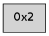

>> << IDX [start] -25 -5 +0 +5 +25 +100 [40.0248191357]
 Previous packets
----------------------------------------------------------------------
35.122696 beacon01(adaf) #0 coord=01,02 cycle=176.0ms assoc
-- color-indic=0 64 c9 48
35.132640 beacon02(adaf) #0 coord=01,02 cycle=176.0ms assoc 64 e0 66
35.144222 [Hello(2): seq=24 sysInfo= stat=]
----------------------------------------------------------------------
35.318781 beacon01(adaf) #0 coord=01,02 cycle=176.0ms assoc
-- color-indic=0 64 f0 45
35.328724 beacon02(adaf) #0 coord=01,02 cycle=176.0ms assoc 64 d9 6b
----------------------------------------------------------------------
35.514866 beacon01(adaf) #0 coord=01,02 cycle=176.0ms assoc
-- color-indic=0 64 bb 52
35.524808 beacon02(adaf) #0 coord=01,02 cycle=176.0ms assoc 64 92 7c
35.536399 [Hello(2): seq=25 sysInfo= stat=]
----------------------------------------------------------------------
35.710952 beacon01(adaf) #0 coord=01,02 cycle=176.0ms assoc
-- color-indic=0 64 82 5f
35.720896 beacon02(adaf) #0 coord=01,02 cycle=176.0ms assoc 64 ab 71
----------------------------------------------------------------------
35.907037 beacon01(adaf) #0 coord=01,02 cycle=176.0ms assoc
-- color-indic=0 64 37 3f
35.916981 beacon02(adaf) #0 coord=01,02 cycle=176.0ms assoc 64 1e 11
35.928554 [Hello(2): seq=26 sysInfo= stat=]
----------------------------------------------------------------------
36.103121 beacon01(adaf) #0 coord=01,02 cycle=176.0ms assoc
-- color-indic=0 64 0e 32
36.113065 beacon02(adaf) #0 coord=01,02 cycle=176.0ms assoc 64 27 1c
----------------------------------------------------------------------
36.299206 beacon01(adaf) #0 coord=01,02 cycle=176.0ms assoc
-- color-indic=0 64 45 25
36.309149 beacon02(adaf) #0 coord=01,02 cycle=176.0ms assoc 64 6c 0b
36.320699 [Hello(2): seq=27 sysInfo= stat=]
----------------------------------------------------------------------
36.495291 beacon01(adaf) #0 coord=01,02 cycle=176.0ms assoc
-- color-indic=0 64 7c 28
36.505235 beacon02(adaf) #0 coord=01,02 cycle=176.0ms assoc 64 55 06
----------------------------------------------------------------------
36.691376 beacon01(adaf) #0 coord=01,02 cycle=176.0ms assoc
-- color-indic=0 64 d3 0b
36.701319 beacon02(adaf) #0 coord=01,02 cycle=176.0ms assoc 64 fa 25
36.712888 [Hello(2): seq=28 sysInfo= stat=]
----------------------------------------------------------------------
36.887462 beacon01(adaf) #0 coord=01,02 cycle=176.0ms assoc
-- color-indic=0 64 ea 06
36.897405 beacon02(adaf) #0 coord=01,02 cycle=176.0ms assoc 64 c3 28
----------------------------------------------------------------------
37.083546 beacon01(adaf) #0 coord=01,02 cycle=176.0ms assoc
-- color-indic=0 64 a1 11
37.093489 beacon02(adaf) #0 coord=01,02 cycle=176.0ms assoc 64 88 3f
37.105072 [Hello(2): seq=29 sysInfo= stat=]
----------------------------------------------------------------------
37.279631 beacon01(adaf) #0 coord=01,02 cycle=176.0ms assoc
-- color-indic=0 64 98 1c
37.289575 beacon02(adaf) #0 coord=01,02 cycle=176.0ms assoc 64 b1 32
----------------------------------------------------------------------
37.475715 beacon01(adaf) #0 coord=01,02 cycle=176.0ms assoc
-- color-indic=0 64 ff 56
37.485658 beacon02(adaf) #0 coord=01,02 cycle=176.0ms assoc 64 d6 78
37.497235 PARSE ERROR************************
Traceback (most recent call last):
File "PacketAnalysis.py", line 167, in showOperaPacket
structPacket = OperaPacketParse.parsePacket(rawPacket)
File "../../pkg-python/HipSens/Core/OperaPacketParse.py", line 461, in parsePacket
return parseHelloMessage(data)
File "../../pkg-python/HipSens/Core/OperaPacketParse.py", line 109, in parseHelloMessage
sysInfo,stability,colorInfo = struct.unpack("!HBB", linkList[0:4])
error: unpack requires a string argument of length 4
48 0e 02 00 00 1e 00 02 53 04 00 00 00 00 4c 00 53 95
----------------------------------------------------------------------
37.671800 beacon01(adaf) #0 coord=01,02 cycle=176.0ms assoc
-- color-indic=0 64 c6 5b
37.681744 beacon02(adaf) #0 coord=01,02 cycle=176.0ms assoc 64 ef 75
----------------------------------------------------------------------
37.867884 beacon01(adaf) #0 coord=01,02 cycle=176.0ms assoc
-- color-indic=0 64 8d 4c
37.877828 beacon02(adaf) #0 coord=01,02 cycle=176.0ms assoc 64 a4 62
37.889395 [Hello(2): seq=31 sysInfo= stat=]
----------------------------------------------------------------------
38.063969 beacon01(adaf) #0 coord=01,02 cycle=176.0ms assoc
-- color-indic=0 64 b4 41
38.073912 beacon02(adaf) #0 coord=01,02 cycle=176.0ms assoc 64 9d 6f
----------------------------------------------------------------------
38.260055 beacon01(adaf) #0 coord=01,02 cycle=176.0ms assoc
-- color-indic=0 64 1b 62
38.269998 beacon02(adaf) #0 coord=01,02 cycle=176.0ms assoc 64 32 4c
38.281577 [Hello(2): seq=32 sysInfo= stat=]
----------------------------------------------------------------------
38.456140 beacon01(adaf) #0 coord=01,02 cycle=176.0ms assoc
-- color-indic=0 64 22 6f
38.466083 beacon02(adaf) #0 coord=01,02 cycle=176.0ms assoc 64 0b 41
----------------------------------------------------------------------
38.652227 beacon01(adaf) #0 coord=01,02 cycle=176.0ms assoc
-- color-indic=0 64 69 78
38.662170 beacon02(adaf) #0 coord=01,02 cycle=176.0ms assoc 64 40 56
38.673762 [Hello(2): seq=33 sysInfo= stat=]
----------------------------------------------------------------------
38.848311 beacon01(adaf) #0 coord=01,02 cycle=176.0ms assoc
-- color-indic=0 64 50 75
38.858256 beacon02(adaf) #0 coord=01,02 cycle=176.0ms assoc 64 79 5b
----------------------------------------------------------------------
39.044396 beacon01(adaf) #0 coord=01,02 cycle=176.0ms assoc
-- color-indic=0 64 a7 ec
39.054340 beacon02(adaf) #0 coord=01,02 cycle=176.0ms assoc 64 8e c2
39.065912 [Hello(2): seq=34 sysInfo= stat=]
----------------------------------------------------------------------
39.240481 beacon01(adaf) #0 coord=01,02 cycle=176.0ms assoc
-- color-indic=0 64 9e e1
39.250425 beacon02(adaf) #0 coord=01,02 cycle=176.0ms assoc 64 b7 cf
----------------------------------------------------------------------
39.436565 beacon01(adaf) #0 coord=01,02 cycle=176.0ms assoc
-- color-indic=0 64 d5 f6
39.446511 beacon02(adaf) #0 coord=01,02 cycle=176.0ms assoc 64 fc d8
39.458063 [Hello(2): seq=35 sysInfo= stat=]
----------------------------------------------------------------------
39.632650 beacon01(adaf) #0 coord=01,02 cycle=176.0ms assoc
-- color-indic=0 64 ec fb
39.642595 beacon02(adaf) #0 coord=01,02 cycle=176.0ms assoc 64 c5 d5
----------------------------------------------------------------------
39.828734 beacon01(adaf) #0 coord=01,02 cycle=176.0ms assoc
-- color-indic=0 64 43 d8